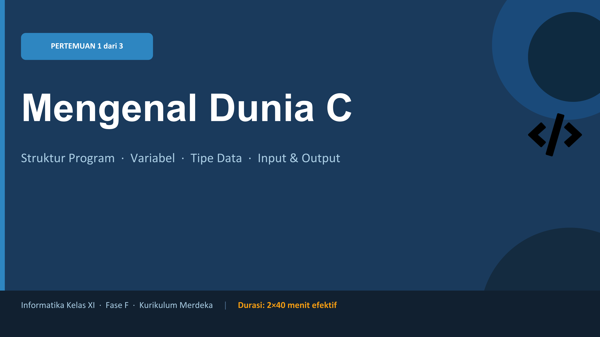
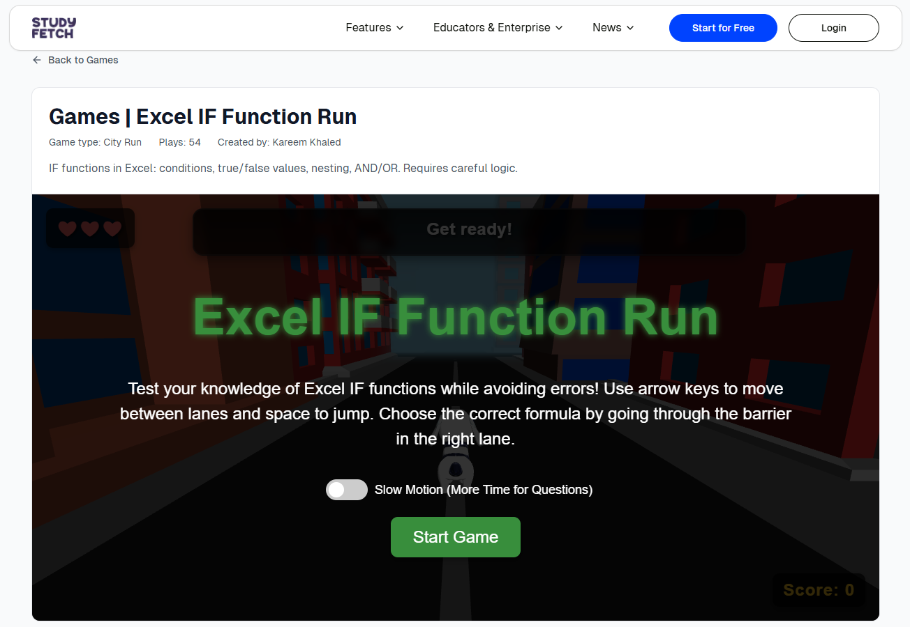
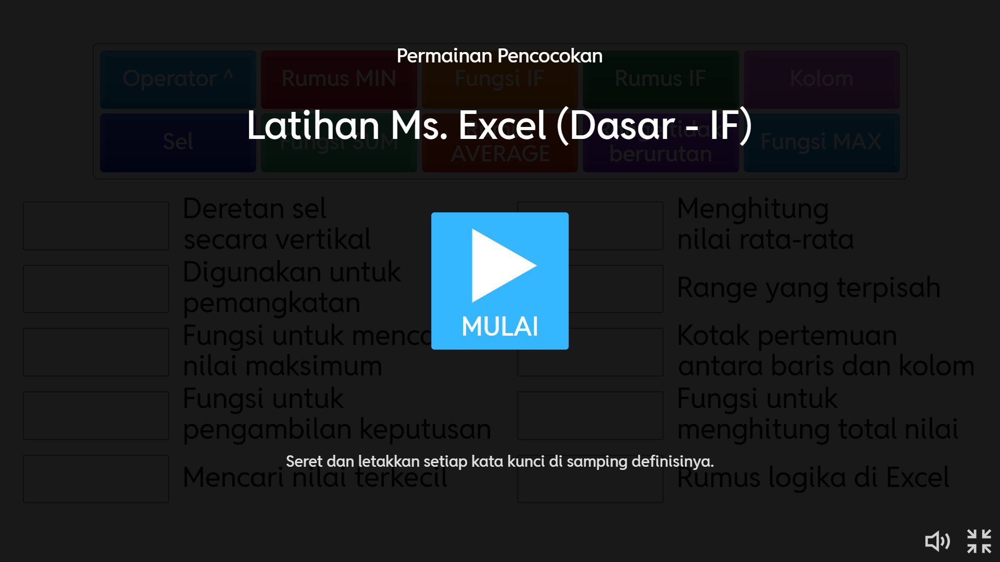
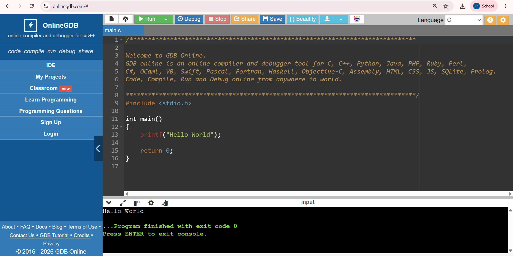

Produk PPL
Artefak pembelajaran
Kumpulan produk pembelajaran yang disusun dan digunakan selama pelaksanaan PPL di sekolah mitra. Klik kartu untuk melihat detail dan mengunduh file.
modul-01.pdf
Modul 1
Pengenalan Excel
Scaffolding
modul-02.pdf
Modul 2
Fungsi logika IF
Direct Learning
modul-03.pdf
Modul 3
Algoritma dan Pemrograman
Konstruktivisme
modul-04.pdf
Modul 4
Algoritma & Pemrograman
PjBL
lkpd-01.pdf
LKPD 1
Fungsi SUM & AVERAGE
Mandiri
lkpd-02.pdf
LKPD 2
Praktik fungsi IF
Mandiri
lkpd-03.pdf
LKPD 3
Menyusun algoritma
Mandiri
lkpd-04.pdf
LKPD 4
Mengenal Bahasa C
KelompokPresentasi 1
Excel dasar
Demonstrasi
Presentasi 2
Fungsi logika IF
Demonstrasi
Presentasi 3
Apa itu algoritma?
Pengenalan
PPT 2
Simbol flowchart
Flowchart
Wordwall
Game flowchart
Kompetisi
Flowchart Maze
Game kelompok
Kolaboratif
Quizizz
Kuis spreadsheet
Interaktif
OnlineGDB
Praktik Coding Bahasa C
Coding
Draw.io
Pembuatan Flowchart
Visualisasi